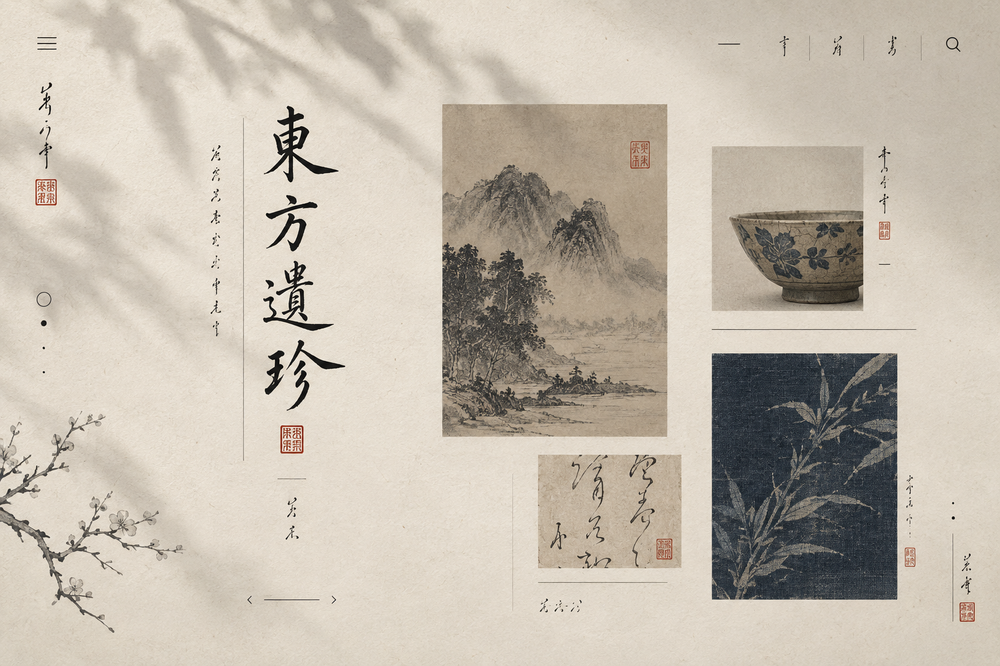

084 / 219
WORK / PROMPT DECODE
宣纸档案 Oriental Minimal
完整提示词 Prompt
minimal oriental cultural archive website as an art-directed visual page, warm rice-paper background with soft natural shadow, ink-black vertical typography, cinnabar seal marks, delicate ruled lines, sparse archival image blocks, quiet navigation, Chinese and Japanese editorial design, museum archive, poetic minimalism, wide desktop page, asymmetric grid, generous negative space, rice white ink black muted cinnabar faded indigo, handmade paper grain, dry brush ink, subtle fibers, no browser chrome, no device frame, no watermark
备注
重点：宣纸纤维、朱砂印记、竖排文字和博物馆档案般的安静气质。